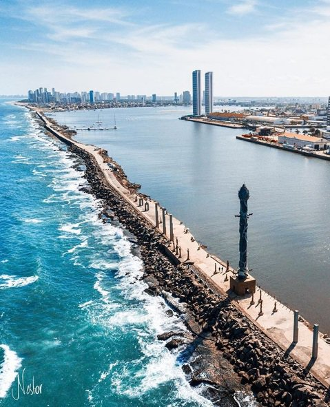

Vamos conhecer Recife?
Parque das Esculturas Francisco Brennand
Parque das Esculturas Francisco Brennand: Localizado próximo ao Marco Zero, esse parque é uma instalação a céu aberto sobre o molhe do porto. Ele abriga 90 obras do renomado artista plástico Francisco Brennand. Uma das esculturas mais imponentes é a Coluna de Cristal, com 32 metros de altura. A entrada no parque é gratuita, mas se você optar por fazer a travessia, há uma taxa de R$ 5. O parque funciona 24 horas por dia, e a travessia a partir do Marco Zero ocorre diariamente, das 7h às 17h

Centro de Artesanato de Pernambuco
Uma parada obrigatória para quem deseja levar para casa uma lembrança da viagem. Nesse centro, você encontrará mais de 25 mil peças produzidas por artesãos de todo o estado. O espaço é bem organizado e possui ambientes decorados para que os visitantes possam visualizar a utilização das peças em diversos ambientes da casa. A entrada é gratuita, e o horário de funcionamento é de segunda a sábado, das 8h às 19h, e aos domingos, das 8h às 16h.